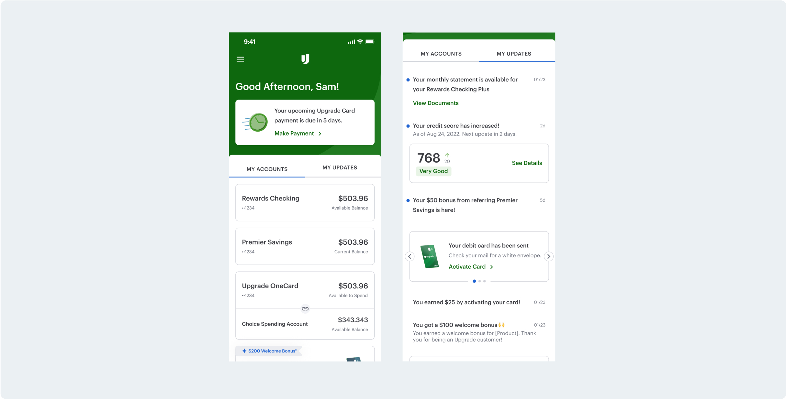

Scalable home screen for a multi-product fintech
B2C Product Design, 2023
How I redesigned a cluttered, slow, inconsistent homepage into a clear experience that can scale with the business
Context
Upgrade started as a loan business in 2017.
Since then, they’ve expanded to many different financial products.

Problem
Problems on the homepage stemmed from each product team’s autonomy over their product’s tile
After running an audit of current states and unmoderated usability tests, we validated the biggest problems: lack of visual hierarchy and cohesion, information overload and unused real estate, slow performance, and no central team

“
I can see what’s happening so it’s clear enough, just not very modern
There’s a lot of information
I think I would click here to see my account. Oh, no I have to click the small arrow.
Approach
Growing from a few people with a vision to a large group with goals and a plan
This project started with one designer (me) and one PM. After our audit and research, having a vision and dedication to improving the experience we were able to define goals and grow the project to include phases of design iteration and research, a core working group of designers, engineers, PMs, and a larger stakeholder group to keep in the loop and get feedback from.
⏱️
Faster
üéØ
Clearer
✨
More modern
üîÑ
Consistent
üìà
Scalable
Iteration
During iteration research, we explored different tile designs, visual styles, navigation patterns
In our phases of research, we asked users explain their understanding of different homepage scenarios, to complete basic tasks on the app, and to evaluate their interest in a company with the app designs provided.

Post launch, we added “My Updates”, allowing users to see more account related information beyond just their one next action, but without sacrificing the simplicity of the homepage
We included ideas in our early research for this concept, but because users showed the most confusion with this feature we wanted to explore it further. We explored if updates should be a list of tiled widgets, behind a notifications bell, as part of a long scroll page below accounts, or on a separate tab.